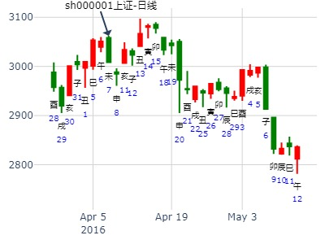
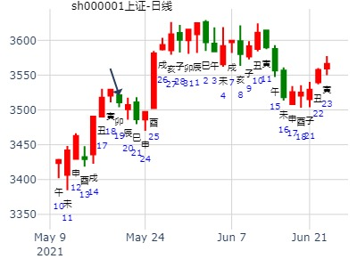

问2020年123月大盘。
2020年1月10日12时43分 (在线摇卦) 晖
干支：己亥年 丁丑月 壬子日 丙午时 （日空：寅卯）
坤宫：地泽临 坤宫：地泽临
六神 伏神 本 卦 变 卦
白虎 子孙癸酉金 ▅▅ ▅▅ 子孙癸酉金 ▅▅ ▅▅
腾蛇 妻财癸亥水 ▅▅ ▅▅ 应 妻财癸亥水 ▅▅ ▅▅ 应
勾陈 兄弟癸丑土 ▅▅ ▅▅ 兄弟癸丑土 ▅▅ ▅▅
朱雀 兄弟丁丑土 ▅▅ ▅▅ 兄弟丁丑土 ▅▅ ▅▅
青龙 官鬼丁卯木 ▅▅▅▅▅ 世 官鬼丁卯木 ▅▅▅▅▅ 世
玄武 父母丁巳火 ▅▅▅▅▅ 父母丁巳火 ▅▅▅▅▅
主帖标题: 下周股票涨跌卦，放在一起吧。
公历时间：2020年1月19日19时44分 农历时间：己亥年 十二月二十五日戌时
干 支：己亥年 丁丑月 辛酉日 戊戌时
旬 空：辰巳 申酉 子丑 辰巳
神 煞：驿马─亥 桃花─午 日禄─酉 贵人─寅，午
中国预测网纳甲六爻排盘
坤宫：地泽临
六神 【本 卦】
螣蛇 ▄▄ ▄▄ 子孙癸酉金
勾陈 ▄▄ ▄▄ 妻财癸亥水 应
朱雀 ▄▄ ▄▄ 兄弟癸丑土
青龙 ▄▄ ▄▄ 兄弟丁丑土
玄武 ▄▄▄▄▄ 官鬼丁卯木 世
白虎 ▄▄▄▄▄ 父母丁巳火
注：股票名不详，用大盘仅供参考
主帖标题: 寅年上证年涨跌卦例收集
公历：2022年1月4日10时37分，星期二。
农历：辛丑年 十二月 初二日 巳时。 易友测2022股市
神煞：驿马-亥 桃花-午 干禄-午 贵人-亥、酉
干支：辛丑年 庚子月 丁巳日 乙巳时 (卦身：未)
主变卦 地泽临(坤宫) [空亡:子、丑]
青龙 ▅▅ ▅▅ 子孙癸酉金
玄武 ▅▅ ▅▅ 妻财癸亥水 应
白虎 ▅▅ ▅▅ 兄弟癸丑土
螣蛇 ▅▅ ▅▅ 兄弟丁丑土
勾陈 ▅▅▅▅▅ 官鬼丁卯木 世
朱雀 ▅▅▅▅▅ 父母丁巳火
摇卦完，直接见顶。
主帖标题: 麦站看看妖股明天涨跌
出生：没填 年 性别：男 占事：600610中毅达明天涨跌
排卦：元亨利贞网六爻在线排盘系统 http://www.china95.net
公历起卦时间：2016年2月24日15时27分 (电脑自动)
干支：丙申年 庚寅月 丙子日 丙申时 （日空：申酉）
神煞：驿马－寅 桃花－酉 日禄－巳 贵人－酉，亥
坤宫：地泽临 坤宫：地泽临
六神 伏神 本 卦 变 卦
青龙 子孙癸酉金 ▅▅ ▅▅ 子孙癸酉金 ▅▅ ▅▅
玄武 妻财癸亥水 ▅▅ ▅▅ 应 妻财癸亥水 ▅▅ ▅▅ 应
白虎 兄弟癸丑土 ▅▅ ▅▅ 兄弟癸丑土 ▅▅ ▅▅
腾蛇 兄弟丁丑土 ▅▅ ▅▅ 兄弟丁丑土 ▅▅ ▅▅
勾陈 官鬼丁卯木 ▅▅▅▅▅ 世 官鬼丁卯木 ▅▅▅▅▅ 世
朱雀 父母丁巳火 ▅▅▅▅▅ 父母丁巳火 ▅▅▅▅▅
主帖标题: 捍卫老祖宗感通卦的尊严：测2020.3.2甲辰日上证走势？N03
测2020.3.2甲辰日上证godsh zhx？
男 占事：没填
公历起卦时间：2020年2月29日11时1分 (电脑自动)
干支：庚子年 戊寅月 壬寅日 丙午时 （日空：辰巳）
坤宫：地泽临 坤宫：地泽临
六神 伏神 本 卦 变 卦
白虎 子孙癸酉金 ▅▅ ▅▅ 子孙癸酉金 ▅▅ ▅▅
螣蛇 妻财癸亥水 ▅▅ ▅▅ 应 妻财癸亥水 ▅▅ ▅▅ 应
勾陈 兄弟癸丑土 ▅▅ ▅▅ 兄弟癸丑土 ▅▅ ▅▅
朱雀 兄弟丁丑土 ▅▅ ▅▅ 兄弟丁丑土 ▅▅ ▅▅
青龙 官鬼丁卯木 ▅▅▅▅▅ 世 官鬼丁卯木 ▅▅▅▅▅ 世
玄武 父母丁巳火 ▅▅▅▅▅ 父母丁巳火 ▅▅▅▅▅
主帖标题: 辛丑年 庚寅月卦--张三汉
公历时间：2021年2月4日9时22分 农历时间：庚子年 十二月二十三日巳时
干 支：辛丑年 庚寅月 癸未日 丁巳时
旬 空：辰巳 午未 申酉 子丑
神 煞：驿马─巳 桃花─子 日禄─子 贵人─巳，卯
中国预测网纳甲六爻排盘
坤宫：地泽临
六神 【本 卦】
白虎 ▄▄ ▄▄ 子孙癸酉金
螣蛇 ▄▄ ▄▄ 妻财癸亥水 应
勾陈 ▄▄ ▄▄ 兄弟癸丑土
朱雀 ▄▄ ▄▄ 兄弟丁丑土
青龙 ▄▄▄▄▄ 官鬼丁卯木 世
玄武 ▄▄▄▄▄ 父母丁巳火

主帖标题: 人民币何时结束升值趋势
起卦方式：铜钱摇卦 占问事宜：关心的事情
起卦公历：2022年2月4日20时58分(北京时间)
干支： 壬寅年 壬寅月 戊子日 壬戌时 (卦身：丑)
主变卦 地泽临(坤宫) [空亡:午、未]
朱雀 ━ ━ 子孙酉金
青龙 ━ ━ 妻财亥水 应
玄武 ━ ━ 兄弟丑土
白虎 ━ ━ 兄弟丑土
螣蛇 ━━━ 官鬼卯木 世
勾陈 ━━━ 父母巳火
注：此图非人民币。
地泽临静卦。600571信雅达在卯辰月走势如何？.md
时间: 2015-03-15
干支: 乙未年己卯月庚寅日 (旬空: 午未 )
临静卦
腾蛇 ▅▅ ▅▅ 子孙酉金
勾陈 ▅▅ ▅▅ 妻财亥水 应
朱雀 ▅▅ ▅▅ 兄弟丑土
青龙 ▅▅ ▅▅ 兄弟丑土
玄武 ▅▅▅▅▅ 官鬼卯木 世
白虎 ▅▅▅▅▅ 父母巳火
主帖标题: 捍卫老祖宗感通卦尊严：测2020.3.19上证收盘走势？2赛04
3.19上证收盘十位数jonm 1ynom？
男 占事：没填
公历起卦时间：2020年3月19日12时41分 (电脑自动)
干支：庚子年 己卯月 辛酉日 甲午时 （日空：子丑）
坤宫：地泽临 坤宫：地泽临
六神 伏神 本 卦 变 卦
螣蛇 子孙癸酉金 ▅▅ ▅▅ 子孙癸酉金 ▅▅ ▅▅
勾陈 妻财癸亥水 ▅▅ ▅▅ 应 妻财癸亥水 ▅▅ ▅▅ 应
朱雀 兄弟癸丑土 ▅▅ ▅▅ 兄弟癸丑土 ▅▅ ▅▅
青龙 兄弟丁丑土 ▅▅ ▅▅ 兄弟丁丑土 ▅▅ ▅▅
玄武 官鬼丁卯木 ▅▅▅▅▅ 世 官鬼丁卯木 ▅▅▅▅▅ 世
白虎 父母丁巳火 ▅▅▅▅▅ 父母丁巳火 ▅▅▅▅▅
主帖标题: 3.15上证收盘十位数
男 占事：没填
公历起卦时间：2021年3月15日8时28分 (电脑自动)
干支：辛丑年 辛卯月 壬戌日 甲辰时 （日空：子丑）
坤宫：地泽临 坤宫：地泽临
六神 伏神 本 卦 变 卦
白虎 子孙癸酉金 ▅▅ ▅▅ 子孙癸酉金 ▅▅ ▅▅
螣蛇 妻财癸亥水 ▅▅ ▅▅ 应 妻财癸亥水 ▅▅ ▅▅ 应
勾陈 兄弟癸丑土 ▅▅ ▅▅ 兄弟癸丑土 ▅▅ ▅▅
朱雀 兄弟丁丑土 ▅▅ ▅▅ 兄弟丁丑土 ▅▅ ▅▅
青龙 官鬼丁卯木 ▅▅▅▅▅ 世 官鬼丁卯木 ▅▅▅▅▅ 世
玄武 父母丁巳火 ▅▅▅▅▅ 父母丁巳火 ▅▅▅▅▅

主帖标题: 测江南高纤能涨到什么价位。。狗日的，今天大跌。
2010年4月13日12时15分 (起卦方式：手动指定) 元亨利贞网六爻排盘程序
干支：庚寅年 庚辰月 癸巳日 戊午时 日空亡：午未
坤宫：地泽临
白虎 子孙酉金 ▅▅ ▅▅
螣蛇 妻财亥水 ▅▅ ▅▅ 应
勾陈 兄弟丑土 ▅▅ ▅▅
朱雀 兄弟丑土 ▅▅ ▅▅
青龙 官鬼卯木 ▅▅▅▅▅ 世
玄武 父母巳火 ▅▅▅▅▅
占事：保利地产600048一旬内行情？
公历起卦时间：2015年4月7日23时33分 (阿晖在线)
干支：乙未年 庚辰月 甲寅日 甲子时 （日空：子丑）
坤宫：地泽临 坤宫：地泽临
六神 伏神 本 卦 变 卦
玄武 子孙癸酉金 ▅▅ ▅▅ 子孙癸酉金 ▅▅ ▅▅
白虎 妻财癸亥水 ▅▅ ▅▅ 应 妻财癸亥水 ▅▅ ▅▅ 应
腾蛇 兄弟癸丑土 ▅▅ ▅▅ 兄弟癸丑土 ▅▅ ▅▅
勾陈 兄弟丁丑土 ▅▅ ▅▅ 兄弟丁丑土 ▅▅ ▅▅
朱雀 官鬼丁卯木 ▅▅▅▅▅ 世 官鬼丁卯木 ▅▅▅▅▅ 世
青龙 父母丁巳火 ▅▅▅▅▅ 父母丁巳火 ▅▅▅▅▅
卯日冲子孙暗动，涨停。
占事：4月8号沪市涨跌？
起卦方式：手工指定
公历时间：2016年04月07日19时39分 农历时间：丙申年三月初一戌
神 煞：驿马─巳 桃花─子 日禄─午 贵人─子 申
干 支：丙申年 壬辰月 己未日 甲戌时 日 空：子丑
坤宫：地泽临
六神 【本 卦】
勾陈 ▅▅ ▅▅ 子孙癸酉金
朱雀 ▅▅ ▅▅ 妻财癸亥水 应
青龙 ▅▅ ▅▅ 兄弟癸丑土
玄武 ▅▅ ▅▅ 兄弟丁丑土
白虎 ▅▅▅▅▅ 官鬼丁卯木 世
螣蛇 ▅▅▅▅▅ 父母丁巳火
申伏亥财下，周5申日透出如动爻生财，克去鬼世
低开高走，收阳线

2019-04-20
个股年卦：长白山年度走势。 地泽临静卦。
时间: 2019-04-20 22时41分
干支: 己亥年戊辰月丁亥日 (旬空: 午未 )
临静卦
青龙 ▅▅ ▅▅ 子孙酉金
玄武 ▅▅ ▅▅ 妻财亥水 应
白虎 ▅▅ ▅▅ 兄弟丑土
腾蛇 ▅▅ ▅▅ 兄弟丑土
勾陈 ▅▅▅▅▅ 官鬼卯木 世
朱雀 ▅▅▅▅▅ 父母巳火
全年没涨。勉强到亥月止跌，子月涨了一个月。
2015-05-16 -临静卦 -一周大盘
518-522上证走势
时间: 2015-05-16 9时28分
干支: 乙未年辛巳月壬辰日 (旬空: 午未 )
临静卦
白虎 ▅▅ ▅▅ 子孙酉金
腾蛇 ▅▅ ▅▅ 妻财亥水 应
勾陈 ▅▅ ▅▅ 兄弟丑土
朱雀 ▅▅ ▅▅ 兄弟丑土
青龙 ▅▅▅▅▅ 官鬼卯木 世
玄武 ▅▅▅▅▅ 父母巳火
主帖标题: 5.20是涨？跌？幅度如何？（7）
时间: 2021-05-19
上证： 即时得：
收阴，中阴
坤宫：地泽临 坤宫：地泽临
六神 伏神 本 卦 变 卦
青龙 子孙癸酉金 ▅▅ ▅▅ 子孙癸酉金 ▅▅ ▅▅
玄武 妻财癸亥水 ▅▅ ▅▅ 应 妻财癸亥水 ▅▅ ▅▅ 应
白虎 兄弟癸丑土 ▅▅ ▅▅ 兄弟癸丑土 ▅▅ ▅▅
螣蛇 兄弟丁丑土 ▅▅ ▅▅ 兄弟丁丑土 ▅▅ ▅▅
勾陈 官鬼丁卯木 ▅▅▅▅▅ 世 官鬼丁卯木 ▅▅▅▅▅ 世
朱雀 父母丁巳火 ▅▅▅▅▅ 父母丁巳火 ▅▅▅▅▅

主帖标题: 2012年7月大盘涨跌卦
占事：2012年7月大盘涨跌？
公历起卦时间：2012年6月29日15时16分 (手工指定)
干支：壬辰年 丙午月 辛酉日 丙申时 （日空：子丑）
坤宫：地泽临 坤宫：地泽临
六神 伏神 本 卦 变 卦
腾蛇 子孙癸酉金 ▅▅ ▅▅ 子孙癸酉金 ▅▅ ▅▅
勾陈 妻财癸亥水 ▅▅ ▅▅ 应 妻财癸亥水 ▅▅ ▅▅ 应
朱雀 兄弟癸丑土 ▅▅ ▅▅ 兄弟癸丑土 ▅▅ ▅▅
青龙 兄弟丁丑土 ▅▅ ▅▅ 兄弟丁丑土 ▅▅ ▅▅
玄武 官鬼丁卯木 ▅▅▅▅▅ 世 官鬼丁卯木 ▅▅▅▅▅ 世
白虎 父母丁巳火 ▅▅▅▅▅ 父母丁巳火 ▅▅▅▅▅
罗斯柴尔德(89616661) 14:38:24
大恒科技午月甲子旬
公历时间：2016年6月12日17时26分
干 支：丙申年 甲午月 乙丑日 乙酉时
旬 空：辰巳 辰巳 (戌亥) 午未
坤宫：地泽临
六神 【本 卦】
玄武 ▄▄ ▄▄ 子孙癸酉金
白虎 ▄▄ ▄▄ 妻财癸亥水 应
螣蛇 ▄▄ ▄▄ 兄弟癸丑土
勾陈 ▄▄ ▄▄ 兄弟丁丑土
朱雀 ▄▄▄▄▄ 官鬼丁卯木 世
青龙 ▄▄▄▄▄ 父母丁巳火
临：元，亨，利，贞。 至于八月有凶。
短线寅绝子孙，卯破子孙，辰补合子孙涨。亥子二天值斑涨涨。
浙商证券到八月底-金玉堂
时间: 2024-07-17
干支: 甲辰年辛未月壬午日 (旬空: 申酉 )
临静卦
白虎 ▅▅ ▅▅ 子孙酉金
腾蛇 ▅▅ ▅▅ 妻财亥水 应
勾陈 ▅▅ ▅▅ 兄弟丑土
朱雀 ▅▅ ▅▅ 兄弟丑土
青龙 ▅▅▅▅▅ 官鬼卯木 世
玄武 ▅▅▅▅▅ 父母巳火
此处卯冲旬空旺的酉金，冲实涨。申日长生，子孙值班涨。
出生：SH000001 年 2011年 08月16日 上指 模拟予想趋势
占事：AUG18-2011
公历起卦时间：2011年8月15日18时1分 (手工指定)
干支：辛卯年 丙申月 壬寅日 己酉时 （日空：辰巳）
坤宫：地泽临 坤宫：地泽临
六神 伏神 本 卦 变 卦
白虎 子孙癸酉金 ▅▅ ▅▅ 子孙癸酉金 ▅▅ ▅▅
腾蛇 妻财癸亥水 ▅▅ ▅▅ 应 妻财癸亥水 ▅▅ ▅▅ 应
勾陈 兄弟癸丑土 ▅▅ ▅▅ 兄弟癸丑土 ▅▅ ▅▅
朱雀 兄弟丁丑土 ▅▅ ▅▅ 兄弟丁丑土 ▅▅ ▅▅
青龙 官鬼丁卯木 ▅▅▅▅▅ 世 官鬼丁卯木 ▅▅▅▅▅ 世
玄武 父母丁巳火 ▅▅▅▅▅ 父母丁巳火 ▅▅▅▅▅
主帖标题: 2012年9月大盘涨跌卦
占事：2012年9月大盘涨跌？
公历起卦时间：2012年8月31日16时9分 (手工指定)
干支：壬辰年 戊申月 甲子日 壬申时 （日空：戌亥）
坤宫：地泽临 坤宫：地泽临
六神 伏神 本 卦 变 卦
玄武 子孙癸酉金 ▅▅ ▅▅ 子孙癸酉金 ▅▅ ▅▅
白虎 妻财癸亥水 ▅▅ ▅▅ 应 妻财癸亥水 ▅▅ ▅▅ 应
腾蛇 兄弟癸丑土 ▅▅ ▅▅ 兄弟癸丑土 ▅▅ ▅▅
勾陈 兄弟丁丑土 ▅▅ ▅▅ 兄弟丁丑土 ▅▅ ▅▅
朱雀 官鬼丁卯木 ▅▅▅▅▅ 世 官鬼丁卯木 ▅▅▅▅▅ 世
青龙 父母丁巳火 ▅▅▅▅▅ 父母丁巳火 ▅▅▅▅▅
天同，金发科技818问未来。地泽临静卦。
时间: 2022-08-18 20时21分
干支: 壬寅年戊申月癸卯日 (旬空: 辰巳 )
临静卦
白虎 ▅▅ ▅▅ 子孙酉金
腾蛇 ▅▅ ▅▅ 妻财亥水 应
勾陈 ▅▅ ▅▅ 兄弟丑土
朱雀 ▅▅ ▅▅ 兄弟丑土
青龙 ▅▅▅▅▅ 官鬼卯木 世
玄武 ▅▅▅▅▅ 父母巳火
子孙暗动而大涨，应在23日。
然后动态旬空寅卯空，酉日世爻官鬼冲实，见顶。
8月有凶，见顶。

女
占事：现在被套求测购买的股票啥时候能解套 2013-2014涨幅情况谢谢....
公历起卦时间：2013年9月1日18时14分 (在线摇卦)
干支：癸巳年 庚申月 庚午日 乙酉时 （日空：戌亥）
坤宫：地泽临 坤宫：地泽临
六神 伏神 本 卦 变 卦
腾蛇 子孙癸酉金 ▅▅ ▅▅ 子孙癸酉金 ▅▅ ▅▅
勾陈 妻财癸亥水 ▅▅ ▅▅ 应 妻财癸亥水 ▅▅ ▅▅ 应
朱雀 兄弟癸丑土 ▅▅ ▅▅ 兄弟癸丑土 ▅▅ ▅▅
青龙 兄弟丁丑土 ▅▅ ▅▅ 兄弟丁丑土 ▅▅ ▅▅
玄武 官鬼丁卯木 ▅▅▅▅▅ 世 官鬼丁卯木▅▅▅▅▅ 世
白虎 父母丁巳火 ▅▅▅▅▅ 父母丁巳火▅▅▅▅▅
占事：930上证走势 悟道喜悦
2014年9月30日7时45分
干 支：甲午年 癸酉月 甲辰日 戊辰时 (寅卯)
坤宫：地泽临
六神 【本 卦】
玄武 ▄▄ ▄▄ 子孙癸酉金
白虎 ▄▄ ▄▄ 妻财癸亥水 应
螣蛇 ▄▄ ▄▄ 兄弟癸丑土
勾陈 ▄▄ ▄▄ 兄弟丁丑土
朱雀 ▄▄▄▄▄ 官鬼丁卯木 世
青龙 ▄▄▄▄▄ 父母丁巳火
月生日墓，打平。横盘。
出生：没填 年 性别：男 占事：10月12-16日上证大盘涨跌？
干支：乙未年 丙戌月 戊午日 己未时 （日空：子丑）
神煞：驿马－申 桃花－卯 日禄－巳 贵人－丑，未
坤宫：地泽临 坤宫：地泽临
六神 伏神 本 卦 变 卦
朱雀 子孙癸酉金 ▅▅ ▅▅ 子孙癸酉金 ▅▅ ▅▅
青龙 妻财癸亥水 ▅▅ ▅▅ 应 妻财癸亥水 ▅▅ ▅▅ 应
玄武 兄弟癸丑土 ▅▅ ▅▅ 兄弟癸丑土 ▅▅ ▅▅
白虎 兄弟丁丑土 ▅▅ ▅▅ 兄弟丁丑土 ▅▅ ▅▅
腾蛇 官鬼丁卯木 ▅▅▅▅▅ 世 官鬼丁卯木 ▅▅▅▅▅ 世
勾陈 父母丁巳火 ▅▅▅▅▅ 父母丁巳火 ▅▅▅▅▅
~实为涨涨跌涨涨
大众交通十个交易日涨跌-牛教授
时间: 2024-10-09
干支: 甲辰年甲戌月丙午日 (旬空: 寅卯 )
临静卦
青龙 ▅▅ ▅▅ 子孙酉金
玄武 ▅▅ ▅▅ 妻财亥水 应
白虎 ▅▅ ▅▅ 兄弟丑土
腾蛇 ▅▅ ▅▅ 兄弟丑土
勾陈 ▅▅▅▅▅ 官鬼卯木 世
朱雀 ▅▅▅▅▅ 父母巳火
北新路桥下周涨跌？
公历时间：2011年11月12日17时43分 农历时间：辛卯年 十月十七日酉时
干支：辛卯年 癸亥月 辛未日 丁酉时
旬空：辰巳 子丑 戌亥 辰巳
神煞：驿马─巳 桃花─子 日禄─酉 贵人─寅，午
坤宫：地泽临
六神 【本 卦】
螣蛇 ▄▄ ▄▄ 子孙癸酉金
勾陈 ▄▄ ▄▄ 妻财癸亥水 应
朱雀 ▄▄ ▄▄ 兄弟癸丑土
青龙 ▄▄ ▄▄ 兄弟丁丑土
玄武 ▄▄▄▄▄ 官鬼丁卯木 世
白虎 ▄▄▄▄▄ 父母丁巳火
莫非亥卯未三合官鬼，涨一天就见顶？
周二要深跌……
安圆圆 性别：女 占事：招商地产在12月的走势如何
公历起卦时间：2014年11月30日21时33分 (手工指定)
干支：甲午年 乙亥月 乙巳日 丁亥时 （日空：寅卯）
坤宫：地泽临 坤宫：地泽临
六神 伏神 本 卦 变 卦
玄武 子孙癸酉金 ▅▅ ▅▅ 子孙癸酉金 ▅▅ ▅▅
白虎 妻财癸亥水 ▅▅ ▅▅ 应 妻财癸亥水 ▅▅ ▅▅ 应
腾蛇 兄弟癸丑土 ▅▅ ▅▅ 兄弟癸丑土 ▅▅ ▅▅
勾陈 兄弟丁丑土 ▅▅ ▅▅ 兄弟丁丑土 ▅▅ ▅▅
朱雀 官鬼丁卯木 ▅▅▅▅▅ 世 官鬼丁卯木 ▅▅▅▅▅ 世
青龙 父母丁巳火 ▅▅▅▅▅ 父母丁巳火 ▅▅▅▅▅
应爻暗动生世爻。世爻旬空，等出空或冲空而涨。
酉日冲世爻涨。马后炮：此处应爻暗动，亥月值月定性。
主帖标题: 用易学测子月[12..7....1..7曰]沪市大盘走势
公历起卦时间：2009年12月5日11时43分 (手工指定)
干支：己丑年 乙亥月 甲申日 庚午时 （日空：午未）
神煞：驿马－寅 桃花－酉 日禄－寅 贵人－丑，未
坤宫：地泽临
玄武 子孙癸酉金 ▅▅ ▅▅
白虎 妻财癸亥水 ▅▅ ▅▅ 应
腾蛇 兄弟癸丑土 ▅▅ ▅▅
勾陈 兄弟丁丑土 ▅▅ ▅▅
朱雀 官鬼丁卯木 ▅▅▅▅▅ 世
青龙 父母丁巳火 ▅▅▅▅▅
本月看又是涨,应涨5点左右[170个点]
马后炮：8日即是亥月亥日见顶。 巳日冲亥水暗动，涨了。但也拉出下影线。
下面测下本月涨付大的板块
六爻线上排卦系统结果
姓名：l 出生年份：2009年 性别：男 占事:热点
起卦方式：手动摇卦 (中国批八字命理网-在线排盘 http://www.Pibazi.net )
起卦时间(公历)：2009年12月5日12时31分 农历时间：己丑年十月十九日午时
干 支：己丑年乙亥月 甲申日 庚午时
旬 空：午未 申酉 午未 戌亥
神 煞：驿马─寅 桃花─酉 日禄─寅 贵人─丑，未
乾宫：天山遁 离宫：火山旅
六神 伏 神 【本 卦】 【变 卦】
玄武 ▄▄▄▄▄ 父母壬戌土 ▄▄▄▄▄ 官鬼己巳火
白虎 ▄▄▄▄▄ 兄弟壬申金 应O-> ▄▄ ▄▄ 父母己未土
螣蛇 ▄▄▄▄▄ 官鬼壬午火 ▄▄▄▄▄ 兄弟己酉金 应
勾陈 ▄▄▄▄▄ 兄弟丙申金 ▄▄▄▄▄ 兄弟丙申金
朱雀 妻财甲寅木 ▄▄ ▄▄ 官鬼丙午火 世 ▄▄ ▄▄ 官鬼丙午火
青龙 子孙甲子水 ▄▄ ▄▄ 父母丙辰土 ▄▄ ▄▄ 父母丙辰土 世
卦看水木涨的多
金少
下面测下,下周大盘
卦看冲高回落上升,收小阳小阴
下面测下周领涨的板块
六爻线上排卦系统结果
姓名：l 出生年份：2009年 性别：男 占事:热点
起卦方式：手工指定 (中国批八字命理网-在线排盘 http://www.Pibazi.net )
起卦时间(公历)：2009年12月5日12时54分 农历时间：己丑年十月十九日午时
干 支：己丑年乙亥月 甲申日 庚午时
旬 空：午未 申酉 午未 戌亥
神 煞：驿马─寅 桃花─酉 日禄─寅 贵人─丑，未
震宫：雷风恒 坤宫：雷天大壮（六冲）
六神 伏 神 【本 卦】 【变 卦】
玄武 ▄▄ ▄▄ 妻财庚戌土 应 ▄▄ ▄▄ 妻财庚戌土
白虎 ▄▄ ▄▄ 官鬼庚申金 ▄▄ ▄▄ 官鬼庚申金
螣蛇 ▄▄▄▄▄ 子孙庚午火 ▄▄▄▄▄ 子孙庚午火 世
勾陈 ▄▄▄▄▄ 官鬼辛酉金 世 ▄▄▄▄▄ 妻财甲辰土
朱雀 兄弟庚寅木 ▄▄▄▄▄ 父母辛亥水 ▄▄▄▄▄ 兄弟甲寅木
青龙 ▄▄ ▄▄ 妻财辛丑土 X-> ▄▄▄▄▄ 父母甲子水 应
主帖标题: 六爻卦测子月沪市大盘[12.6至2011.1.6日]
公历起卦时间：2010年12月5日19时7分 (在线摇卦)
干支：庚寅年 丁亥月 己丑日 甲戌时 （日空：午未）
神煞：驿马－亥 桃花－午 日禄－午 贵人－子，申
坤宫：地泽临 坤宫：地泽临
六神 伏神 本 卦 变 卦
勾陈 子孙癸酉金 ▅▅ ▅▅ 子孙癸酉金 ▅▅ ▅▅
朱雀 妻财癸亥水 ▅▅ ▅▅ 应 妻财癸亥水 ▅▅ ▅▅ 应
青龙 兄弟癸丑土 ▅▅ ▅▅ 兄弟癸丑土 ▅▅ ▅▅
玄武 兄弟丁丑土 ▅▅ ▅▅ 兄弟丁丑土 ▅▅ ▅▅
白虎 官鬼丁卯木 ▅▅▅▅▅ 世 官鬼丁卯木 ▅▅▅▅▅ 世
腾蛇 父母丁巳火 ▅▅▅▅▅ 父母丁巳火 ▅▅▅▅▅
占事：2014年12月8-12日大盘走势
公历时间：2014年12月7日18时27分
干 支：甲午年 丙子月 壬子日 己酉时
旬 空：辰巳 申酉 (寅卯) 寅卯
坤宫：地泽临
六神 【本 卦】
白虎 ▄▄ ▄▄ 子孙癸酉金
螣蛇 ▄▄ ▄▄ 妻财癸亥水 应
勾陈 ▄▄ ▄▄ 兄弟癸丑土
朱雀 ▄▄ ▄▄ 兄弟丁丑土
青龙 ▄▄▄▄▄ 官鬼丁卯木 世
玄武 ▄▄▄▄▄ 父母丁巳火
占事：12月7-11日大盘涨跌？金烟妞
公历起卦时间：2015年12月4日15时7分 (手工指定)
干支：乙未年 丁亥月 甲寅日 壬申时 （日空：子丑）
神煞：驿马－申 桃花－卯 日禄－寅 贵人－丑，未
坤宫：地泽临
六神 伏神 本 卦
玄武 子孙癸酉金 ▅▅ ▅▅
白虎 妻财癸亥水 ▅▅ ▅▅ 应
腾蛇 兄弟癸丑土 ▅▅ ▅▅
勾陈 兄弟丁丑土 ▅▅ ▅▅
朱雀 官鬼丁卯木 ▅▅▅▅▅ 世
青龙 父母丁巳火 ▅▅▅▅▅
冲击3400看多方能否守住，红星或红十字报收。
主帖标题: 2019.16--20 SZZS趋势？！！
求测人：某人，男，庚申(1980年)，其它方式(起卦方式)
公历：2019年12月13日15时40分，星期五。
干支：己亥年 丙子月 甲申日 壬申时 (卦身：未)
主变卦 地泽临(坤宫) [空亡:午、未]
玄武 ▅▅ ▅▅ 子孙癸酉金
白虎 ▅▅ ▅▅ 妻财癸亥水 应
螣蛇 ▅▅ ▅▅ 兄弟癸丑土
勾陈 ▅▅ ▅▅ 兄弟丁丑土
朱雀 ▅▅▅▅▅ 官鬼丁卯木 世
青龙 ▅▅▅▅▅ 父母丁巳火
有可能不准，参与自负.... 周12涨周345跌，周线跌，阴